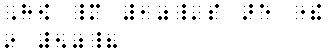
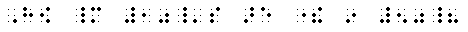
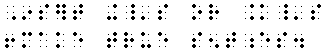
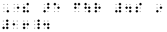
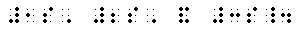

BRL: Braille through Remote Learning
Specialized Codes Course
Home
Session Topics
Orientation
Numerals and Indicator
Punctuation
Signs of Operation
Signs of Comparison
Decimal Point
Monetary
Signs of Omission
Plurals
Ordinals
Format
Evaluation
Reading Exercise
Writing Exercise
Other Resources
Send mail to ©laß
|
©hoose LANGUAGE bArd fr©Ide
PLURAL AND POSSESSIVE ENDINGS |


Apostrophe-s: 's  
- When apostrophe-s is used to form the plural or possessive of a mathematical expression, the punctuation indicator must be used before the apostrophe. If the apostrophe is omitted in print, it must be omitted in braille.
- 1's and 2's

- How many 10's are there in 50?

- Insert +'s or ='s to make true sentences.

- 1s and 2s

- There are four 4s in 16.

- +s or =s
- When apsotrophe-s or "s" is attached to a mathematical expression, it becomes part of that expression and must be punctuated mathematically.
- 1's, 2's, and 3's.

- 1s, 2s, and 3s.

|
|
 Tჸe $_hodor bARionlegitim@.
Tჸe $_hodor bARionlegitim@.